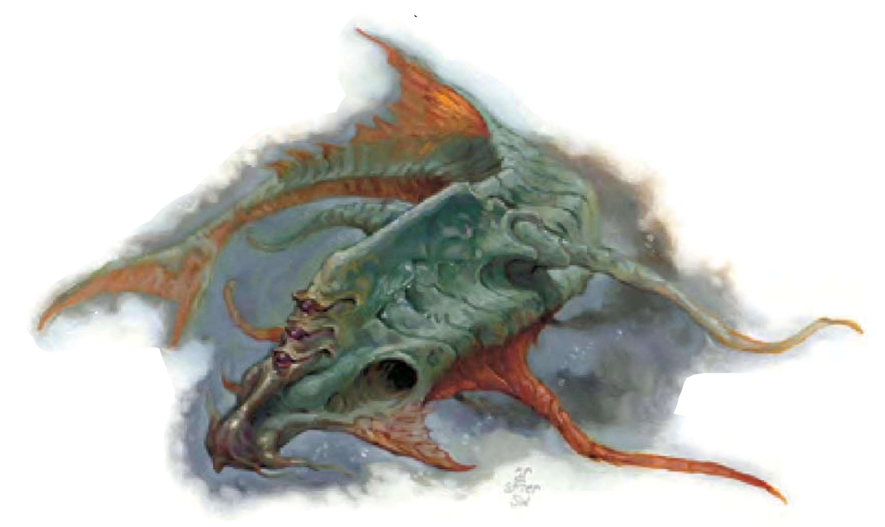

原本平静宜人的水面突然窜出数只触手，扭动着朝你逼近。这些触手的主人是原始鱼类，体长由圆形头部到半月形尾部约20英尺。三只细长眼睛通过凹凸不平的皮肤保护，由上而下依序排列于头部前方。如此一来，攻击时可保持头部位于水面下，只露出眼睛。
底栖魔鱼是外观似鱼的惊人两栖怪物，通常住在地底湖或河流中。底栖魔鱼厌恶所有非水生生物，一发现即格杀勿论。
底栖魔鱼的腹部为粉红色，下方伸出四条跳动的蓝黑色触手，分泌有腐臭油脂味的灰色黏液。在水中，底栖魔鱼以尾部推进，在陆上则以触手拖行。底栖魔鱼重约6500磅。
底栖魔鱼残忍并拥有高度智慧，是非常危险的掠食者。他们一出生便继承父母的知识，亦可吸收遭其吞食猎物的记忆，因此通晓许多古代的惊人秘密。
底栖魔鱼非常聪明，不会立即攻击靠近的陆地生物。他们会先退后隐藏于水中，以其幻术能力造出冷冽清澈的宜人水景，期待猎物进入。底栖魔鱼也拥有灵能，可奴役其他生物自相残杀。
底栖魔鱼为雌雄同体，单独繁殖。每五年产下1d3个卵。这些卵得再经历五年，才能孵化为底栖魔鱼成鱼。尽管新孵化的底栖魔鱼在生理上已经完全成熟，但他们仍会留在父母身边十年，听从其吩咐。
底栖魔鱼有自己的语言，也通晓地底通用语和水族语。
战斗底栖魔鱼能以长而具黏液的触手进行攻击，但比较偏好保持距离以幻术战斗。
奴役（超自然）：底栖魔鱼每天有三次机会可试着奴役30英尺之内任何生物。奴役的效果与法术“支配人类”类似（施法者等级16，意志检定DC=17）。遭到奴役的生物会遵从底栖魔鱼以心电感应传送的命令。他们每隔24小时都可重新进行一次意志检定，通过则解除奴役状态。除此之外，只有两者之一死亡或透过法术“移除诅咒”才可能获得释放；不过双方距离超过1英里时，奴役状态也会自行解除。豁免DC的调整值与魅力调整值相同。
灵能（类法术能力）：随意使用――“催眠图纹”（DC=15）、“幻墙术”（DC=17）、“海市蜃楼”（DC=18）、“常驻幻影”（DC=18）、“预置幻影”（DC=19）、“投影术”（DC=20）、“迷罩”（DC=19）。有效施法者等级16级。豁免DC的调整值与魅力调整值相同。
黏液（特异）：被底栖魔鱼触手击中可是苦不堪言。若该生物强韧检定失败（DC=19），皮肤在接下来1d4+1分钟内会逐渐转化为透明黏糊的薄膜。该生物必须以冷冽清澈的水保持皮肤湿润，否则每10分钟会受到1d12点伤害。除此之外，该生物的天生防御加值减1（最低不小于0）。豁免DC的调整值与魅力调整值相同。
在转化完成前，法术“移除诅咒”可恢复黏液的影响。然而，转化完成后，只有法术“医疗术”、“集体医疗术”可恢复黏液的影响。
黏液云（特异）：水中的底栖魔鱼会以一层约1英尺厚的黏液云覆盖自己。任何接触或被吸入该黏液云的生物必须通过强韧检定（DC=19），否则接下来3小时内将失去呼吸正常空气的能力。一旦离开水中，该生物会于2d6分钟内窒息。若再次接触黏液云，且强韧检定又失败，则影响将再延长3小时。豁免DC的调整值与体质调整值相同。
技能：底栖魔鱼在进行任何特殊动作或闪身避祸时，“游泳”检定具有+8种族加值。即使分心或受困，他们在进行“游泳”检定时都可以随时取10。若以直线前进，则可在游泳时进行奔跑动作。
底栖魔鱼巫师底栖魔鱼巫师住在多水墓穴或地下城中。他们苦心钻研巫术，并藉以获取更大的权力。底栖魔鱼巫师力量强大，是地下生物的王者之一。由于致力于研究神秘知识，底栖魔鱼巫师通常独自居住。
战斗由于底栖魔鱼巫师的体质属性较高，其黏液（DC=21）与黏液云（DC=21）的豁免检定也较难通过。另一方面，由于底栖魔鱼巫师的魅力属性较低，其奴役（DC=16）与灵能相关能力的豁免检定较易通过。（“催眠图纹”（DC=14）、“幻墙术”（DC=16）、“海市蜃楼”（DC=17）、“常驻幻影”（DC=17）、“预置幻影”（DC=18）、“投影术”（DC=19）、“迷罩”（DC=18）。有效施法者等级16级。）
与敌人周旋时，底栖魔鱼巫师会使用诸如“移位术”、“高等隐形”、“力墙术”等法术保护自己，并伺机以其他法术与能力取得上风。
一般已准备法师法术（4/6/5/4/4/3；豁免检定DC=15+法术等级）：零级――“晕眩术”、“侦测魔法”（2）、“提升抗力”；一级――“魔法警报”、“魅惑人类”、“七彩喷射”、“法师护甲”、“魔法飞弹”（2）；二级――“朦胧术”、“蛮力术”、“黑暗术”、“巧智术”、“识破隐形”；三级――“解除魔法”、“移位术”、“飞行术”、“闪电束”；四级――“高等隐形”、“魅影杀手”、“探知”、“石肤术”；五级――“怪物定身术”、强效“闪电束”、“力墙术”。
| 资料栏位 | 底栖魔鱼 超大型异怪（水生） |
底栖魔鱼巫师、10级法师 超大型异怪（水生） |
|---|---|---|
| 生命骰 | 8d8+40 (76HP) | 8d8+56 加上 10d4+70 (177HP) |
| 先攻权 | +1 | +7 |
| 速度 | 10英尺 (2格)、游泳60英尺 | 10英尺 (2格)、游泳60英尺 |
| 防御等级 | 16 (-2体型、+1敏捷、+7天生)、接触9、措手不及15 | 18 (-2体型、+3敏捷、+7天生)、接触11、措手不及15 |
| 基本攻击/擒抱 | +6/+22 | +11/+28 |
| 攻击 | 触手+12近战 (1d6+8附加黏液) | 触手+18近战 (1d6+9附加黏液) |
| 全力攻击 | 4触手+12近战 (1d6+8附加黏液) | 4触手+18近战 (1d6+9附加黏液) |
| 占用空间/可触距离 | 15英尺/10英尺 | 15英尺/10英尺 |
| 特殊攻击 | 奴役、灵能、黏液 | 奴役、灵能、黏液、法术 |
| 特殊能力 | 水生亚种、黑暗视觉60英尺、黏液云 | 水生亚种、黑暗视觉60英尺、黏液云、召唤魔宠 |
| 豁免检定 | 强韧+7、反射+3、意志+11 | 强韧+15、反射+10、意志+15 |
| 属性 | 力量26、敏捷12、体质20、智力15、感知17、魅力17 | 力量28、敏捷16、体质24、智力20、感知16、魅力14 |
| 技能 | 专注+16、任一知识+13、聆听+16、侦察+16、游泳+8 | 哄骗+13、专注+25、解读文书+15、交涉+6、易容+2 (扮演+4)、威吓+4、神秘知识+15、地下城知识+25、历史知识+15、界域知识+15、聆听+15、搜索+10、察言观色+15、法术辨识+20、侦察+17、生存+3 (在其他界域与地底追踪+5)、游泳+8 |
| 专长 | 警觉、战斗施法、钢铁意志 | 战斗施法、法术强效、免用材料施法、强韧加强、精通先攻、快速反射、抄录卷轴、专攻法术（幻术）、专攻法术（附魔）、法术穿透 |
| 环境 | 地底 | 地底 |
| 组织 | 单独、一窝 (2-4) 或一窝奴役者 (1d3+1 加上 7至12只鱼魔怪) | 单独 |
| 挑战级数 | 7 | 17 |
| 宝藏 | 双倍标准 | 双倍标准 |
| 阵营 | 通常守序邪恶 | 通常守序邪恶 |
| 进化 | 9-16HD (超大型) ；17-24HD (巨型) | 视人物职业而定 |
| 等级修正值 | ― | ― |